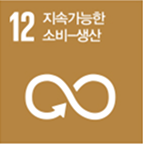

개념 학습
지속가능발전목표(SDGs) 관련 문제 탐색
SDGs의 개념
SDGs란 지속가능발전목표(Sustainable Development Goals)의 줄임말로 유엔(UN)이 2015년에 세계적으로 약속한 17개 목표를 말한다. 2030년까지 빈곤, 교육, 보건, 환경 등과 관련한 다양한 문제를 해결하고 지구와 인류에게 더 나은 미래를 만들어 나가는 것이 SDGs의 목표이다.
지속가능발전목표 17개 중에는 인공지능 기술을 적용하여 해결할 수 있는 문제들을 포함하고 있다.
지속가능발전목표 17개 중에는 인공지능 기술을 적용하여 해결할 수 있는 문제들을 포함하고 있다.



지속가능
발전목표
(SDGs)
발전목표
(SDGs)